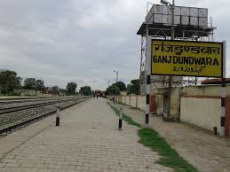

Welcome to Ganjdundwara, a serene and vibrant town with a rich tapestry of history and culture. Nestled in the heart of Uttar Pradesh, Ganjdundwara is known for its warm community, picturesque landscapes, and unique heritage.
Ganj Dundawara is located at 27.43°N latitude and 78.56°E longitude. It has an average elevation of 166 m (545 ft). The city is situated in Gangatic plain. The Ganges is the nearest (8 km [5.0 mi]) holy river to the city.
As per the 2011 Indian Census, Ganjdundwara had a total population of 45,385, of which 23,801 were males and 21,584 were females.
The total number of literates in Ganj Dundawara was 23,245, which constituted 51.2% of the population, with male literacy of 55.7% and female literacy of 46.3%. The effective literacy rate of 7+ population of Ganj Dundawara was 60.2%, of which male literacy rate was 65.4% and female literacy rate was 54.4%.
Ganj Dundawara has a humid subtropical climate. The winters are moderate. The summers are hot and dry, with temperatures regularly exceeding 35 °C (95 °F). The monsoon season runs from the end of June to September. During the monsoon season, almost daily showers are a common phenomenon. From October onward, the weather is pleasant. Proper winter begins in early December.
Discover the Charm of Ganjdundwara..
Whether you're a history enthusiast, nature lover, or simply looking to relax, Ganjdundwara offers a variety of attractions to suit all interests.
Our town is renowned for its vibrant festivals, traditional crafts, and local cuisine. Experience the warmth and hospitality of our residents through our lively cultural events and markets.
Are you planning to visit..

Ganjdundwara is easily accessible by bus, trains or cars. We look forward to welcoming you. Find a range of lodging options, from cozy bed and breakfasts to comfortable hotels. Our town provides a welcoming environment for visitors of all kinds.
Here you go
Ganj Dundawara is situated on the Kanpur-Kasganj-Mathura electrified railway line. Trains are available to various major cities. The main express train which stops at Ganj Dundawara is the Ahmedabad-Gorakghpur Express (19409/19410). The town is connected to the district headquarters, Kasganj, by railway and road. UPSRTC provides various bus services from Ganj Dundwara to Etah (38 km [24 mi]), Delhi (250 km [160 mi]), Agra (120 km [75 mi]), Aligarh (90 km [56 mi]) and Bareilly (100 km [62 mi]).
Contact
For more information about Ganjdundwara, upcoming events, or any inquiries, feel free to reach out to us at sakshigupta0081@gmail.com. We’re here to help make your visit memorable.
//on the bottom of the page I also added the scripts